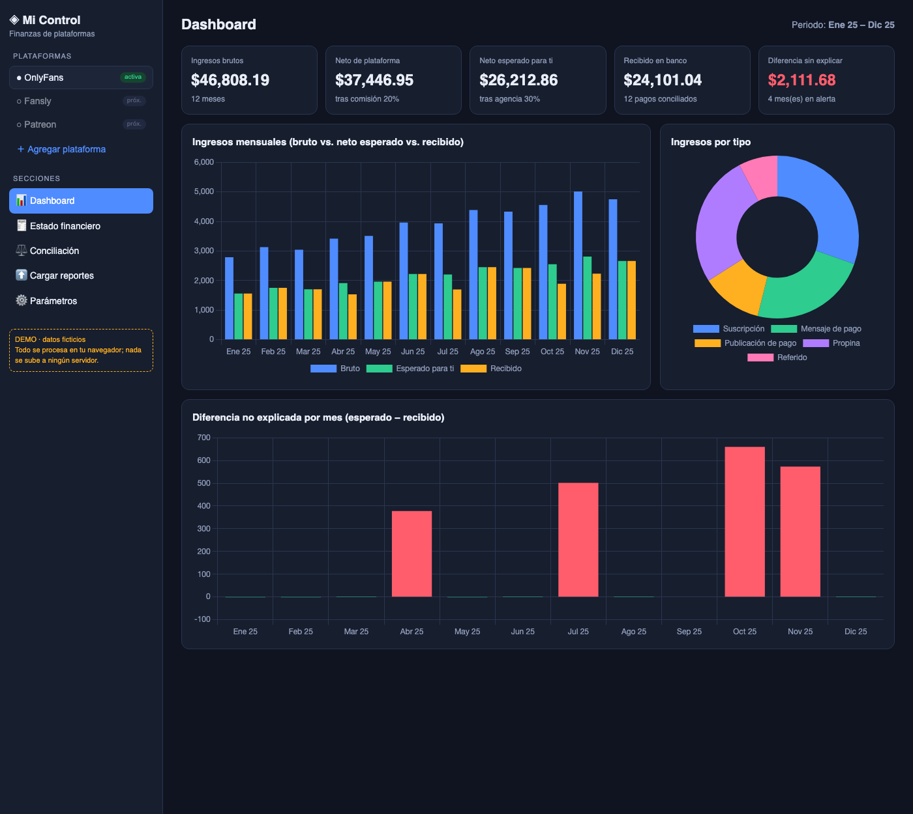
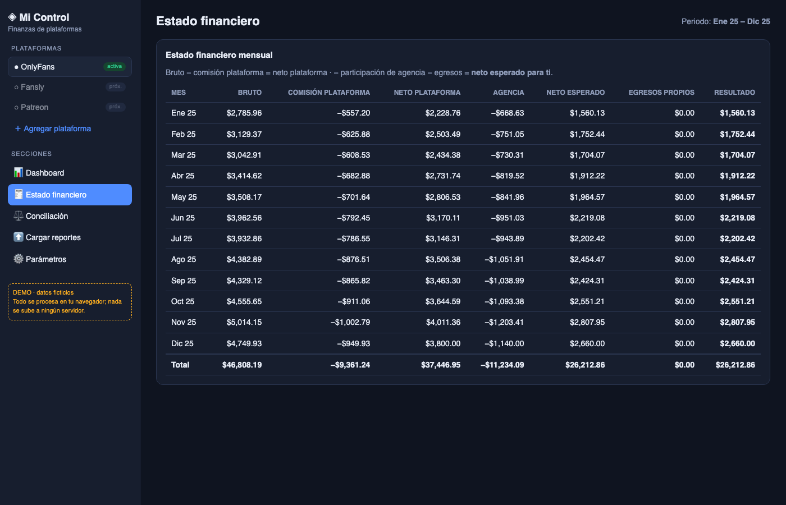
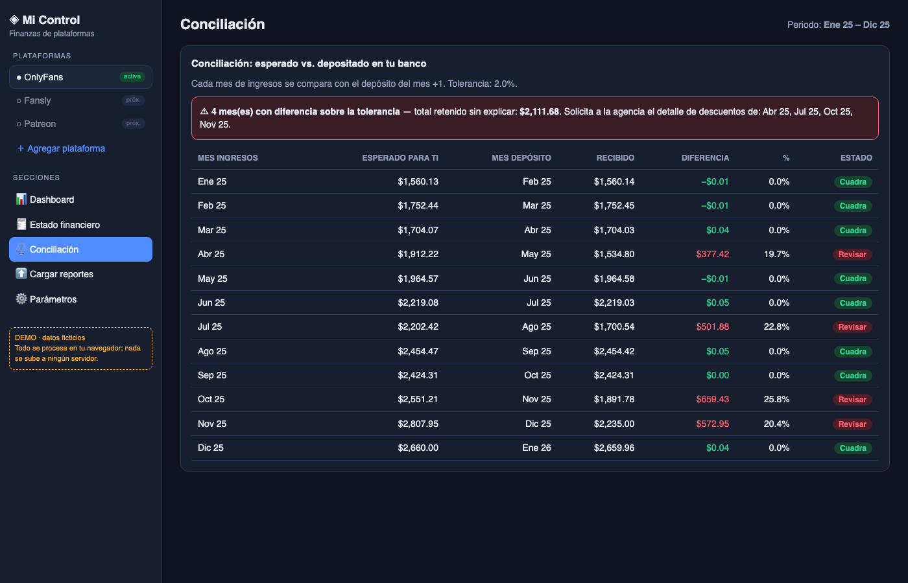
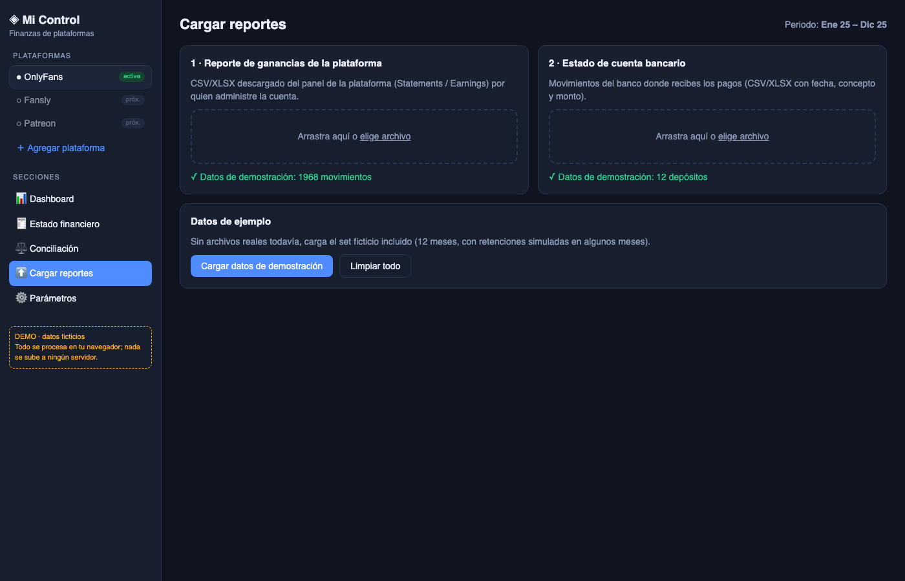
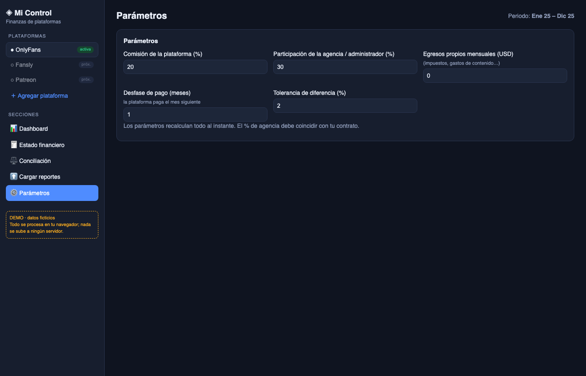

Informe de viabilidad y demostración · 9 de noviembre de 2026 · Caso inicial: OnlyFans · Datos del demo: ficticios
1. Objetivo
Contar con una página propia, de uso gerencial, para ver con claridad los ingresos de una cuenta de plataforma de suscripción administrada por un tercero (agencia): cuánto se generó, cuánto debería llegar al titular y cuánto realmente llegó al banco. La herramienta debe permitir detectar diferencias no explicadas y quedar abierta para sumar otras plataformas.
2. ¿Se puede? Resumen de viabilidad
Opción
Viabilidad
Comentario
Conexión automática por API oficial a OnlyFans
No disponible
La plataforma no ofrece una API pública para creadores ni terceros. Hoy no existe un servicio oficial que consultar.
Automatizar con scraping o usando las credenciales de la cuenta
No recomendado
Contraviene los términos de uso, puede bloquear la cuenta y expone las credenciales. Además la cuenta la opera un tercero.
Carga manual de reportes (CSV/Excel)
Viable (recomendado)
Quien tenga acceso a la cuenta descarga cada mes el reporte de ganancias del panel; el titular lo carga en la página. Cubre meses vencidos.
Conciliación con el estado de cuenta bancario
Viable
El control real contra retenciones indebidas: lo que la plataforma reporta frente a lo que entra al banco, sin depender de la buena fe de ninguna parte.
Lectura automática de bancos
Futuro / según banco
Depende de que la entidad ofrezca exportación o servicios de open banking. Mientras tanto, se carga el extracto.
Otras plataformas (Fansly, Patreon, etc.)
Viable
Cada una se agrega definiendo el mapeo de columnas de su reporte. En las que tengan API se podrá automatizar.
Importante: el formato exacto del reporte real puede variar. El demo detecta columnas por nombre (fecha, descripción, bruto, comisión, neto) y se ajusta con el mapeo; antes de dar el sistema por validado debe probarse con un reporte real descargado de la cuenta.
3. Cómo funciona
Cargar el reporte de ganancias de la plataforma (mensual) y el extracto bancario.
Calcular el estado financiero: bruto − comisión de plataforma = neto de plataforma; − participación de la agencia = neto esperado para ti; − egresos propios = resultado.
Conciliar: cada mes de ingresos se compara con el depósito que debió llegar (con el desfase de pago configurado). Si la diferencia supera la tolerancia, el mes se marca «Revisar» y se calcula el monto retenido sin explicar.
Actuar: con el mes y el monto, se solicita a la agencia el detalle de descuentos.
Privacidad: el reporte se procesa solo con montos e indicadores; no se necesitan ni se muestran datos de suscriptores. En el demo todo se calcula dentro del navegador y no se envía a ningún servidor.
4. Pantallas del demo
Los datos son ficticios: 12 meses de 2025, con retenciones simuladas en cuatro meses para ilustrar las alertas.
4.1 Dashboard

Indicadores principales (bruto, neto de plataforma, neto esperado, recibido en banco, diferencia sin explicar), evolución mensual, composición por tipo de ingreso y diferencia por mes. Selector de plataformas a la izquierda: OnlyFans activa; espacios para otras.
4.2 Estado financiero

Estado mensual con totales: del bruto al resultado, con comisión de plataforma, participación de la agencia y egresos propios configurables.
4.3 Conciliación

Comparación esperado vs. recibido. Los meses fuera de tolerancia se marcan «Revisar» y la alerta resume el monto sin explicar y los meses a reclamar. En el ejemplo: US$ 2.111,68 en 4 meses.
4.4 Carga de reportes

Carga por arrastre o selección de archivo (CSV/XLSX) para el reporte de la plataforma y para el extracto bancario; incluye datos de demostración.
4.5 Parámetros

Comisión de plataforma, participación de la agencia (según contrato), egresos propios, desfase de pago y tolerancia. Todo recalcula al instante.
5. Arquitectura propuesta para la versión real
El demo es una página estática (HTML + JavaScript). Para uso continuo se propone un microdesarrollo con servicios pequeños:
Servicio
Función
Ingesta
Recibe CSV/XLSX, valida formato, aplica el mapeo de columnas de cada plataforma y guarda movimientos normalizados.
Finanzas
Calcula estado financiero, indicadores y comparativos por mes y plataforma.
Conciliación
Cruza ingresos esperados con depósitos bancarios, aplica tolerancias y genera alertas.
Conectores (futuro)
Un conector por plataforma o banco que ofrezca API oficial; reemplaza la carga manual donde sea posible.
Datos y seguridad: base de datos con acceso autenticado y cifrado, usuario único del titular (con doble factor), repositorio privado, sin datos reales en el código, y respaldo. La carga manual evita compartir credenciales de la plataforma con cualquier tercero.
6. Limitaciones del demo y siguientes pasos
Datos ficticios; falta validar con un reporte real de OnlyFans y un extracto real del banco.
Sin inicio de sesión ni almacenamiento: al cerrar la página, los datos se pierden (intencional para el demo).
La conciliación asume un único pago por mes; se debe ajustar si hay varios pagos, comisiones bancarias o cambio de moneda.
La participación de la agencia debe tomarse del contrato real; si hay otros descuentos pactados, se agregan como parámetros.
Plan sugerido
Descargar un reporte real y el extracto del mismo periodo; ajustar el mapeo y validar la conciliación.
Agregar inicio de sesión, base de datos y almacenamiento seguro.
Agregar historial de cargas, exportación a Excel/PDF de la conciliación y un reclamo tipo para la agencia.
Sumar plataformas adicionales según se necesiten.
Código del demo: repositorio privado bcastro24/finanzas-suscripciones-demo.